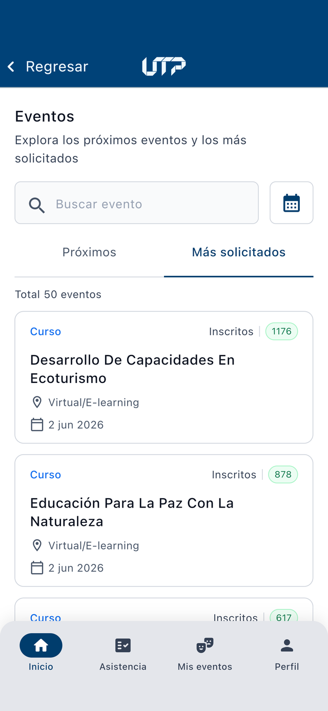

Registro de Actividades y Eventos (RAE) UTP
Manual de Usuario
Consulta de eventos y toma de asistencia desde tu dispositivo móvil. Guía paso a paso para participantes y Coordinadores.
Alcance del aplicativo
El aplicativo RAE permite a la comunidad universitaria consultar los eventos y actividades en los que ya está inscrito, acceder a su código QR personal de ingreso y, al personal autorizado, tomar la asistencia de los participantes a cada actividad —escaneando el QR del asistente, leyendo su documento de identidad o marcando manualmente sobre la lista de inscritos.
¿Qué cubre este manual?
- Consulta de los eventos y actividades en los que ya está inscrito.
- Código QR personal de ingreso.
- Toma de asistencia por QR, por documento de identidad y manual.
- Lectura de cédula física, cédula digital y carnet UTP.
Descarga la aplicación
Escanea el código con la cámara de tu teléfono para descargar la app, o toca el enlace.


Glosario
Palabras que aparecen en este manual, explicadas en lenguaje sencillo.
- Evento
- Es el contenedor principal: agrupa varias actividades bajo un mismo nombre. Por ejemplo, un congreso, un diplomado o una semana cultural.
- Actividad
- Cada parte que compone un evento (una charla, una clase, un taller). A cada actividad se le toma la asistencia por separado.
- Participante / Asistente
- La persona inscrita en un evento que asiste a sus actividades.
- Coordinador
- La persona autorizada para tomar la asistencia de una actividad.
- Inscripción
- El registro previo de una persona en un evento; es quedar en la lista de asistentes.
- Código QR de ingreso
- Una imagen cuadrada de puntos, propia de cada participante. El Coordinador la escanea con la cámara para registrar la asistencia, igual que el código de un boleto.
- Cédula amarilla
- La cédula de ciudadanía tradicional (la de cartón plastificado).
- Cédula digital
- La nueva cédula en formato tarjeta (plástico rígido), con los datos en el reverso.
- Carnet UTP
- El carné institucional de la Universidad que identifica a estudiantes y empleados.
- Asistencia
- El registro que confirma que una persona estuvo presente en una actividad.
- Aforo
- La cantidad de personas registradas frente al total de inscritos.
- Términos y condiciones
- La autorización que das para que la Universidad use tus datos personales conforme a la ley.
Objetivos del aplicativo
Objetivo general
Facilitar y agilizar la consulta de los eventos en los que el usuario ya está inscrito y la toma de asistencia de sus participantes desde un dispositivo móvil, eliminando el registro en papel y manteniendo la información centralizada y disponible en tiempo real.
Objetivos específicos
Roles, permisos y funciones
El aplicativo determina lo que cada usuario puede hacer según el permiso asignado. Un mismo usuario puede ser Participante en unos eventos y Coordinador en otros.
- Ver el listado de eventos disponibles.
- Ver el detalle de un evento y sus actividades.
- Ver y presentar su código QR personal.
- Consultar su perfil y eventos inscritos.
- Ver las actividades que puede gestionar.
- Ver el avance de asistencia registrada.
- Abrir las actividades del evento.
- Registrar asistencia escaneando el QR.
- Registrar asistencia por documento de identidad.
- Marcar y desmarcar asistencia en la lista.
- Quitar (anular) una asistencia registrada.
- Ver la lista de inscritos y su estado.
Autenticación: “cómo ingresar”
- Abre la aplicación RAE en tu dispositivo móvil.
- Ingresa tu usuario y contraseña institucionales de la UTP (los mismos del portal).
- Marca la casilla “He leído y acepto los términos y condiciones”. Puedes tocar el enlace para leer el texto completo.
- Toca el botón “Ingresar”.


Inicio
La pestaña Inicio es la primera pantalla al abrir la aplicación. Da la bienvenida al portal RAE y reúne, en un solo lugar, los eventos más relevantes para ti. Funciona con o sin sesión iniciada: sin sesión muestra los eventos públicos; al iniciar sesión añade tus eventos personales.
A. Qué encuentras en Inicio
- Mis eventos más recientes — los eventos en los que estás inscrito (solo con sesión iniciada).
- Próximos eventos — eventos públicos abiertos a la comunidad, ordenados por fecha.
- Eventos más solicitados — los eventos con mayor demanda.
En cada bloque, el enlace “Ver todos” abre el listado completo, donde puedes buscar, alternar entre Próximos y Más solicitados y filtrar por rango de fechas.





Funciones · Participante
A. Ver y filtrar mis eventos
En la pestaña Mis eventos se muestran los eventos en los que estás inscrito. Puedes buscar por nombre, filtrar por tipo (Generales, Bienestar, Extensión) o por rango de fechas. Si aún no has iniciado sesión, la pestaña te invitará a autenticarte.


B. Detalle del evento y mi código QR
Al tocar un evento verás su información (tipo, fechas, encargado, lugar) y tu código QR personal de ingreso. Este es el código que debes presentar para que te registren la asistencia. Al desplazarte hacia abajo encontrarás las actividades del evento, que puedes filtrar por Todos · Hoy · Próximas.


Funciones · Coordinador (toma de asistencia)
A. Encontrar el evento y sus actividades
Para tomar asistencia, entra a la pestaña Asistencia y busca el evento o actividad en el listado. Al seleccionarlo verás el detalle con el avance de asistencia (registrados / libres / total inscritos) y, más abajo, las actividades del evento, cada una con su botón para registrar.


B. Elegir el método de registro
Toca “Registrar la asistencia” y elige cómo se registrará. En modalidad presencial hay cuatro opciones. Tras elegir el método, selecciona la sesión/actividad sobre la que vas a registrar.
- Escanear código QR — lee el QR del asistente.
- Escanear documento de identidad — cédula física, cédula digital o carnet UTP.
- Marcar en lista — marca manualmente sobre los inscritos.
- Subir asistencia — adjunta un archivo (PDF, JPG o PNG) con el soporte de asistencia.


C. Registrar por QR o por documento
Apunta la cámara al QR del asistente o encuadra su documento. Al leerlo, confirma los datos y se registra la asistencia. El aplicativo reconoce la cédula amarilla, la cédula digital y el carnet UTP.


D. Marcar en lista y quitar asistencia
En “Marcar en lista” verás los inscritos con una casilla por persona. Marca (asistió) o desmarca (quitar) y toca “Guardar asistencia”. Si vas a quitar asistencias, el aplicativo pedirá confirmación mostrando las personas afectadas. Quitar una asistencia es reversible: puedes volver a registrarla.


Mi perfil
En la pestaña Perfil verás tus datos (nombre, documento, correo, celular) y el conteo de eventos inscritos y asistidos. Desde aquí también puedes activar el modo oscuro, abrir tu Historial de eventos, consultar los términos y condiciones y cerrar sesión.


Historial de eventos
Desde Perfil → Historial de eventos consultas todos los eventos en los que has participado a lo largo del tiempo, tanto los vigentes como los ya finalizados. Es la vista ideal para revisar tu trayectoria de participación.
Cómo se organiza
- Buscador — encuentra un evento por su nombre.
- Filtro por estado — alterna entre Todos, Activos (vigentes) y Completados (finalizados).
- Filtro por fechas — acota el historial a un rango concreto.
- Contador — muestra el total de eventos según el filtro aplicado.
Cada tarjeta indica el tipo de evento, el lugar, las fechas y su estado (Vigente o Finalizado). Al tocarla se abre el detalle del evento.


Preguntas frecuentes
¿Con qué usuario y contraseña ingreso?
No veo la opción para tomar asistencia en un evento. ¿Por qué?
El asistente no tiene su QR a la mano. ¿Cómo registro su asistencia?
El escáner no reconoce la cédula.
Aparece “Ya registrado” al escanear.
Aparece “No inscrito”.
Registré a alguien por error. ¿Puedo deshacerlo?
¿Necesito internet?
¡Muchas gracias!
Esperamos que esta guía te haya sido útil.